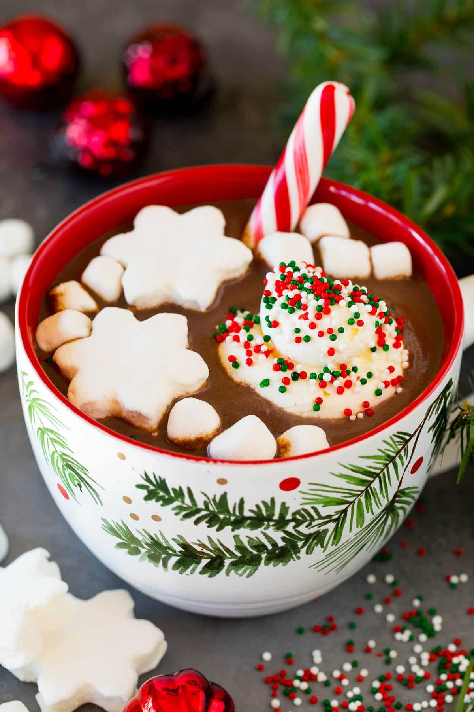

- chocolate
- Whether cooking, baking, decorating, or hiding it from the kids for a midnight snack, chocolate is a favorite treat with a range of uses that goes beyond baking. It's also available in more forms and varieties than you might realize like chocolate bitters and crème de cacao for use in chocolate martinis, Mexican spiked hot chocolate, and frosty mudslides.
- Chocolate was first developed in Mesoamerica approximately 5,300 years ago. The Olmec civilization first used the cacao plant to create a chocolate drink that was used in ceremonies and as medicine. Even the Aztec king Montezuma is said to have drank 50 cups a day out of a golden goblet. Now, that's some serious chocoholic vibes right there. Whether you're baking cookies, cakes, and truffles with dark and milk chocolate, making a mocha, whipping up mousse, mole, a ganache with couverture, Gianduja, or Mexican chocolate, it's helpful to know all the options for choosing the perfect type of chocolate to use in a recipe.
Chocolate is classified according to the proportions of cocoa and fat content used in the formulation. The flavor depends upon how much of the cocoa bean goes into the concoction in comparison to the other ingredients. We can thank countries like Switzerland, France, Belgium, Germany, Mexico, and Italy for adding their culinary expertise to elevate chocolate to gourmet proportions. The Mayans considered it a gift from the gods. We think they had the right

- hot chocolate
- The cold winter month essentials include warm blankets, a stylish and comfy beanie, and a warm cup of hot cocoa to warm your evenings.
While you can make a mix from scratch with some cocoa powder, sugar, and powdered milk, many buy hot cocoa mixes from the store.
However, this can lead to a surplus of powder in your pantry and questions about what else you can do with all that drink powder.

- A divine chocolate cake is closer than you'd think with the help of a powdered hot chocolate mix. There are numerous ways to utilize
this ingredient in your recipe. You can add it to the dry ingredients as a substitute for some of the cocoa powder or mix it with a bit of
heavy cream or water and add it to the liquid ingredients for your cake. The latter will impart a moister texture to your dessert, especially
if you combine it with a thicker liquid, like heavy cream, instead of water.